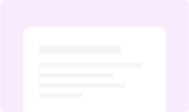
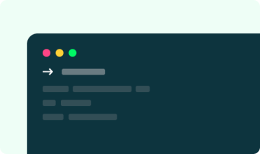
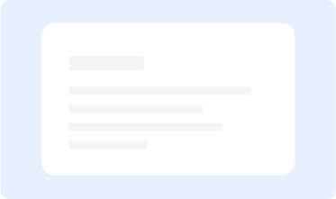

--- BUKU INI UNTUK SIAPA
Buku yang cocok dibaca untuk front-end dan back-end, bahkan UI designer!
Buku ini bukan hanya untuk front-end developer yang ingin meningkatkan skill, buku ini juga cocok untuk back-end developer dan UI designer agar dapat menulis style tanpa harus menulis kode CSS dan tanpa mengandalkan front-end developer!
-

Utility-First Framework
Tailwind hadir dengan konsep utility-first. Utility-first artinya banyak class-class kecil yang bisa digabung untuk menjadi sebuah UI.
-

Tailwind JIT Engine
JIT engine akan men-generate utility-class yang kita gunakan saja. Ini akan membuat pengalaman pengembangan semakin baik.
-

Unopinionated-Framework
Tailwind tidak memiliki pra-desain komponen apapun, ini membuat desain website yang kita buat menjadi unik.
--- BUKU INI UNTUK SIAPA
Kata Pengantar Dari Penulis Buku
Muhamad Nauval Azhar
@mhdnauvalazhar
"Tailwind sangat memungkinkan kamu untuk membangun sebuah desain website yang unik dan tanpa kamu perlu menulis kode CSS sedikitpun. Mungkin kamu akan berpikir bahwa kamu akan membutuhkan waktu yang lebih lama ketika membangun sebuah website dengan utility-first framework ketimbang dengan framework UIkit. Ya, benar. Karena kamu harus memikirkan desain dan mengimplementasikan desain tersebut dari awal sendiri. Namun, kamu perlu ingat manfaat-manfaat yang diberikan oleh utility-first framework, sehingga kamu dapat mempertimbangkannya. Dalam buku ini, kita akan mempelajari framework Tailwind CSS. Mulai dari konsep, workflow, hingga membuat sebuah website responsive dengan TailwindCSS. Buku ini tidak untuk semua orang, setidaknya kamu memahami cara mengoperasikan komputer, memahami HTML, memahami CSS, atau bisa dibilang kamu sudah pernah membangun website sebelumnya dan ingin mempelajari hal baru untuk meningkatkan skill."